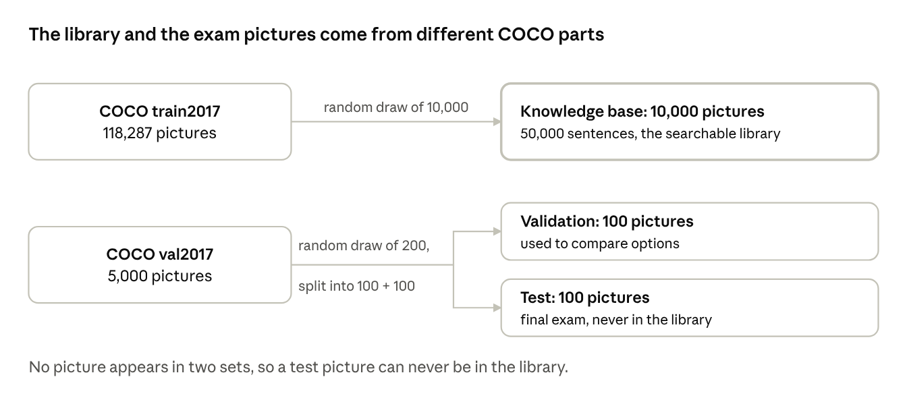
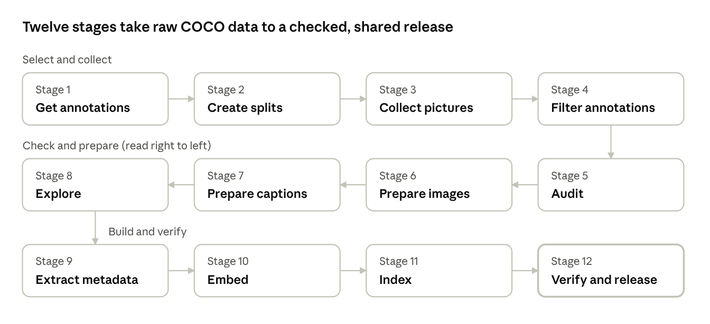
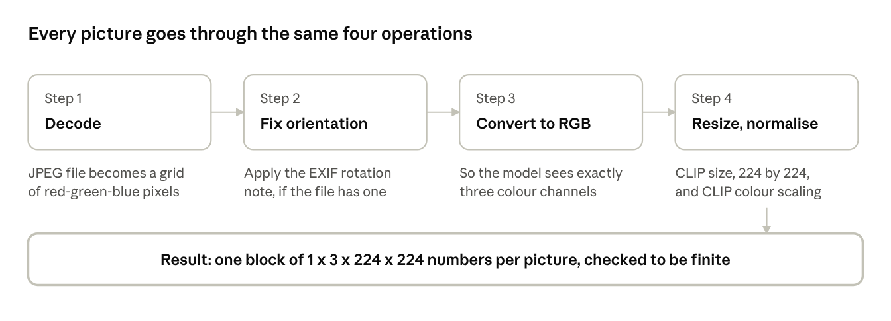
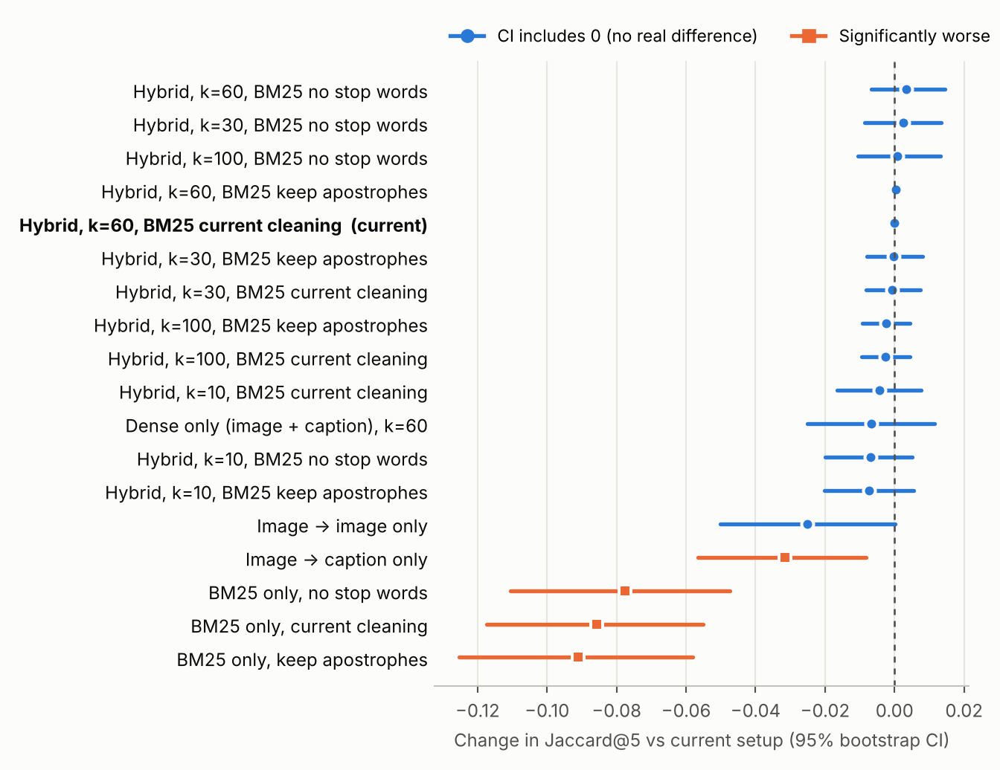

Image-processing mini-project: COCO retrieval-augmented image captioning
Group G9: Hybrid RAG (dense + sparse retrieval)
Group members
Report on the preprocessing phase, November 2026
Group G9 built the data foundation of a hybrid retrieval-augmented image captioning system: 10,200 COCO pictures and their sentences were selected, checked, cleaned, turned into numbers and stored in a searchable library. The vectors were verified row by row, every picture now has a metadata record, and the validation set was used to choose the retrieval configuration.
In plain terms, a computer that describes a photograph by looking up similar photographs cannot start from raw files. Someone must decide which pictures belong in its library, make sure none of the exam pictures are hiding in it, repair or reject damaged files, clean the text, and translate everything into a form a machine can compare quickly. That preparation is called preprocessing, and it is the subject of this report.
What G9 delivered
Status. The release is ready for review but deliberately not frozen. The test set is fixed at 100 pictures, drawn at random from the COCO validation part. One point remains before the freeze: the assignment asks for a stratified test set shared by all groups, and ours is a random draw.
This mini-project asks every group to build a system that writes a sentence describing a photograph, and G9's share of that work is the preparation of the data on which the system stands.
The course project is organised around a technique called retrieval-augmented generation, usually shortened to RAG. Instead of asking a model to describe a picture from nothing, the system first looks for pictures that resemble it in a large library, reads the descriptions that people wrote for those similar pictures, and uses that evidence to help produce a better description. The assignment defines ten RAG techniques, and each technique is given to three groups so that their results can be compared fairly. Groups G7, G8 and G9 share the technique called Hybrid RAG, which combines two ways of searching: one based on the meaning of pictures and sentences, and one based on the exact words they contain.
The assignment (section 4.4) describes the goal as transforming raw COCO data into a clean, reproducible and shared set of artifacts. G9 translated this into eight working objectives:
The work is split into six notebooks, each with one job, run in order on Google Colab. Each notebook starts with a short table of what it writes and where.
| Notebook | Job | GPU |
|---|---|---|
01_data_setup_and_splits | COCO files, the three sets, image archives, annotations limited to our pictures, test-set balance | No |
02_preprocessing | Image preprocessing and its audit, caption cleaning, leakage check | No |
03_eda | Statistics and charts on captions, words, objects, scenes, colours, context and box geometry | No |
04_embeddings_and_indexes | CLIP vectors, FAISS and BM25 indexes, retrieval tests, alignment check | T4 |
05_image_metadata | One metadata record per picture | T4 |
06_validation_and_release_audit | Configuration choice on the validation set, then the final audit | T4 (part A) |
A captioning model that works alone must remember everything it knows about the world inside its own parameters. A retrieval-augmented system works more like a student who is allowed to consult a library. Given a new photograph, it first searches a library of pictures that already have human-written descriptions, picks the closest matches, and reads their descriptions as hints. Only then does it write its own sentence.
A computer does not see a dog or read the word dog. It sees numbers. An embedding is a list of numbers, here 512 of them, that summarises the content of a picture or a sentence. The important property is that similar content gives similar numbers. A useful comparison is a map: on a street map every place has two coordinates, and places that are close on the map are close in real life. An embedding gives every picture and every sentence a position on a much larger map with 512 directions instead of two, and pictures that show similar scenes land near one another. To find similar pictures, the computer simply looks for the nearest points.
G9 uses a model called CLIP (Contrastive Language-Image Pre-training), published by OpenAI. It has two halves, an image encoder and a text encoder, trained together on a very large collection of pictures with their captions so that a photograph and a sentence describing it end up close together on the same map. This is what makes it possible to search sentences using a picture, or pictures using a sentence. The specific version used is ViT-B/32, a medium-sized model that is widely used and runs comfortably on a free graphics processor.
There are two complementary ways to look for relevant sentences.
Hybrid RAG, G9's assigned technique, runs both searches and merges the two ranked lists. The merging method is reciprocal rank fusion. Think of several judges who each rank the candidates; every judge gives a candidate points that shrink as its rank gets lower, and the points are added up. A picture ranked highly by several judges wins, even if no single judge put it first. Its appeal is that it needs no tuning of scores between very different methods.
G9 drew 10,200 pictures at random from the COCO 2017 collection and divided them into a knowledge base, a validation set and a test set that share nothing.
COCO (Common Objects in Context) is a public collection of photographs of everyday scenes, created for research on image understanding. Each photograph comes with two kinds of human-made information that matter here.
The selection is random, but it is repeatable. A random number generator can be started from a seed, a fixed starting number, after which it always produces the same sequence of choices. Think of rolling a die that has been rigged to repeat the same rolls every time the experiment is run: it looks random but is reproducible, and anyone who uses seed 42 obtains the same 10,200 pictures. G9 recorded this seed in the split file itself.
The steps were as follows.
Figure 1 summarises the structure. A key design choice is that the knowledge base comes from one COCO part and the validation and test pictures from the other. Because the two parts are separate by construction, a test picture can never be in the knowledge base, which is the strongest possible protection against leakage.

The result is stored in small, versioned files rather than only in someone's memory. Both split files are also kept in the project's GitHub repository.
| Split | Source part | Pictures | Descriptions |
|---|---|---|---|
| Knowledge base | train2017 (118,287 pictures) | 10,000 | 50,021 original, 50,000 used for retrieval |
| Validation | val2017 (5,000 pictures) | 100 | 501 |
| Test | val2017 | 100 | kept apart, not part of the approved annotation files |
random.Random(42) with rng.sample on sorted identifier lists; the knowledge base is sorted after sampling. The files are data/splits/split_ids.json and data/splits/image_manifest.csv (columns split, image_id, file_name, source); their SHA-256 fingerprints are recorded in the release folder and match the copies in the repository. Pictures were downloaded from the official COCO server with retries and a JPEG check, grouped in archives of 250 pictures (40 for the knowledge base, 1 for validation, 1 for test) and stored uncompressed (ZIP_STORED). Each archive is verified for file names and CRC integrity. The approved annotation files hold 50,021 captions and 72,062 object annotations for the knowledge base and 501 captions and 778 object annotations for validation.G9's preprocessing is a chain of twelve stages, each of which produces a file that the next stage uses and an automatic check that proves the stage worked.
Figure 2 shows the whole journey from the raw COCO collection to the shared release. The chain can be read as a factory line. Raw material enters on the left: the official COCO annotation files and photographs. Along the line the material is selected, inspected, cleaned, measured and converted into the form that the retrieval system needs. At the end, a quality inspection decides whether the product can be released to the other groups. The last stage also includes the choice of configuration on the validation set.

Before any picture was processed, G9 audited the collection and found no missing, damaged or duplicated picture among the 10,200 selected.
ZipFile.testzip() for CRC verification. The cross-set duplicate search first groups all files by their stored CRC-32 value and size, and computes SHA-256 only for groups that span more than one set; the list of duplicate groups is empty. Picture decoding uses Pillow with a JPEG format assertion. The record of the image audit is results/qa/image_preprocessing_audit.csv, with one row per picture and the columns split, image_id, file_name, archive, original_width, original_height, original_mode, exif_orientation, processed_shape, status and error; status can be PASS, FAIL or MISSING.G9 protects the final evaluation with four layers, so that no test picture and no test sentence can reach the knowledge base.
Layer 1: separate sources. The knowledge base comes from the COCO training part and the validation and test pictures come from the COCO validation part. Two parts that were separated by the creators of the dataset cannot contain the same picture. This makes the second rule true by construction: a test picture is not in the library, so it cannot be returned as its own neighbour.
Layer 2: filtered annotation files. After the draw, each approved annotation file was cut down to the pictures of its own set, and the program verified that no sentence or object belongs to a picture outside that set. Only knowledge-base and validation annotation files exist in the approved folder. The test sentences are not part of any file used by the retrieval pipeline.
Layer 3: frozen identifiers. The list of pictures of each set is written once to the split file. If the notebook is run again, it does not silently overwrite the file: it compares the new selection with the saved one and stops with a warning if they differ. This prevents someone from accidentally changing the test set after other work depends on it.
Layer 4: automated audit. The final audit repeats the checks (counts, no overlap, sentences scoped to their sets) and adds a search for byte-identical pictures across sets. The result is recorded in a file that other groups and the teachers can read.
The metadata and validation work keep these rules. The metadata of test pictures comes from an object detector, not from their sentences, and the validation experiment reads validation labels only; no test sentence was opened.
Every one of the 10,200 pictures passes through the same four operations, which turn a photograph in any shape into the standard input that the CLIP image model expects.
Figure 3 shows the sequence. Each operation is explained below.

Operation 1: open and decode. A JPEG file is a compressed description of a picture. Decoding it produces a grid of pixels, and each pixel is described by three numbers (the amounts of red, green and blue), each between 0 and 255. The program opens each file from its archive and decodes it completely, which also proves that the file is not damaged.
Operation 2: correct the orientation. Cameras and phones often store a picture in the orientation of the sensor and add a small note, called the EXIF orientation tag, saying how the picture should be rotated when displayed. A program that ignores the note shows or analyses the picture sideways. The assignment explicitly asks for this correction. G9's program reads the note and rotates the picture accordingly. For the first picture inspected, the tag was absent, meaning no rotation was needed; the step is a safeguard for the pictures that do carry a tag.
Operation 3: convert to RGB. Some images are stored in other colour formats, for example greyscale or with a transparency layer. The model expects exactly three colour channels, so every picture is converted to the standard red-green-blue format. For a picture that is already RGB nothing changes.
Operation 4: resize and normalise for CLIP. CLIP works on pictures of 224 by 224 pixels. Using the official preprocessing tool that comes with the model, each picture is scaled to this size. In the tool's default settings the shorter side is scaled to 224 pixels, which keeps the proportions of the picture, and the central 224 by 224 area is kept. This means that the borders of very wide or very tall pictures can be cut off, a limitation discussed in Chapter 18. The colour values are then normalised: for each channel the average value expected by the model is subtracted and the result is divided by a typical spread. After normalisation, the numbers lie roughly between minus 2 and plus 2 instead of 0 to 255. This is the scale on which the model was trained, so using it gives meaningful results.
After trying the procedure on single pictures, G9 applied it to every picture of the three sets. For each picture the program recorded its original size, colour mode, orientation tag and the shape of the result, and it verified two conditions: the output has the right shape, and all its numbers are finite (no missing or infinite values). The outcome was 10,200 passes, no failure and no missing picture. The table of results is saved as a file so that anybody can examine any single picture.
preprocess_image(image_bytes) opens the bytes with Pillow, loads the image, reads the EXIF tag 274 (orientation), applies ImageOps.exif_transpose, converts to RGB, then calls the CLIPImageProcessor of openai/clip-vit-base-patch32, which returns a float tensor of shape (1, 3, 224, 224). It asserts the shape and torch.isfinite for every picture. The same sequence is applied again in batches of 32 during embedding generation (Chapter 13), so the audited preprocessing is the preprocessing that produced the vectors. The processor's mean and standard deviation are read from its own configuration.G9 keeps every human-written sentence exactly as it was written and creates a separate cleaned copy that is used only for word-based searching.
Each picture has five sentences written independently by different people. They describe the same scene with different words, which is precisely what makes them useful as evidence. For the first knowledge-base picture inspected (number 74), the five sentences are:
The cleaning is deliberately light. Three operations are applied in order.
Two examples taken from the knowledge base show the effect.
| Original sentence | Cleaned sentence |
|---|---|
| A bathroom with a toilet, sink, and shower. | a bathroom with a toilet sink and shower |
| A brown and black horse in the middle of the city eating grass. | a brown and black horse in the middle of the city eating grass |
The program also checks that no cleaned sentence became empty. Whether further cleaning (removing stop words, keeping apostrophes) would help was tested on the validation set; it does not help significantly (Chapter 16).
data/preprocessed_captions/kb_captions_processed.csv, kb_captions_retrieval.csv and kb_extra_captions_audit.csv, each with the fields image_id, annotation_id, caption_raw and caption_clean. For each picture, the five sentences with the lowest annotation numbers are retained; 21 pictures had a sixth sentence, which is kept aside. The CLIP tokenizer is called with padding, truncation and a maximum length of 77 tokens; the longest cleaned sentence has 46 words. BM25 tokenises the cleaned sentence by splitting on spaces.Among the twenty most frequent categories, three observations stand out.
The assignment asks for a measure of scene complexity. G9 used the simplest honest measure: the number of labelled objects in a picture. On average a picture has 7.21 labelled objects and 2.87 different categories, but the median is only 4. The average is higher than the median because a minority of very crowded pictures pull it upward: a quarter of the pictures have two objects or fewer, a quarter have ten or more, one picture in ten has at least 17 and the most crowded picture has 56.
| Class | Labelled objects | Pictures | Share |
|---|---|---|---|
| No annotation | 0 | 102 | 1.0% |
| Simple | 1 to 3 | 4,118 | 41.2% |
| Moderate | 4 to 10 | 3,436 | 34.4% |
| Complex | 11 or more | 2,344 | 23.4% |
The 50,000 knowledge-base sentences are short (about 10 words), built from a small repetitive vocabulary of 9,770 words, and dominated by nouns that name people, places and objects.
To study grammar, G9 used a language tool (spaCy) that assigns every word its part of speech, such as noun or verb. Nouns make up 34.5% of all words, followed by determiners such as a and the (20.5%), prepositions such as on and next to (17.0%), verbs (9.4%) and adjectives (7.1%).
This profile matches the way people describe pictures: a noun phrase for the main object (a man), a preposition for its place (on a skateboard), a verb for its action (riding) and sometimes an adjective for a colour or size (a white dog). Adverbs, numerals and proper nouns together account for less than four percent.
The most frequent words in each grammatical class, in their base forms, are listed below.
| Class | Most frequent words (number of occurrences) |
|---|---|
| Nouns | man 7,193; people 3,568; woman 3,490; table 2,619; street 2,541 |
| Verbs | sit 5,562; stand 4,251; hold 2,715; rid 1,799; play 1,469 |
| Adjectives | white 2,997; large 2,056; black 1,697; small 1,695; young 1,445 |
The form rid in the verb row is the base form that the grammar tool produced for riding; it is shown as obtained.
The assignment asks for a study of attributes such as colour and shape. G9 counted how many sentences mention each basic colour. A sentence that mentions two colours is counted once for each, so the counts are numbers of sentences, out of 50,000, not numbers of objects. The result: white appears in 2,966 sentences, black in 1,675, red in 1,397, blue in 1,128 and green in 1,044, followed by brown (720), yellow (703), orange (423), pink (289), gray (173), grey (135) and purple (134). The two spellings gray and grey together give 308 sentences.
The same keyword method gives a rough idea of where pictures were taken. Outdoor words (street, beach, park, field and similar) appear in 6,120 sentences, indoor words (kitchen, bathroom, bedroom and similar) in 3,190. Time-of-day words are rare: night in 185 sentences and day in 123. Most captions simply do not say whether the scene is inside or outside, or when it was taken.
Shape words (round, square, long, tall, flat and similar) are much rarer than colour words. At the level of pictures, 47.7% of knowledge-base pictures have at least one colour word in their five sentences, but only 6.9% have a shape word. People describing a photo name colours often and shapes seldom, so shape information in the captions is thin.
The boxes drawn around objects give a simple, purely geometric view of their layout. Across the 465,692 pairs of objects that share a picture, 71,826 pairs (15.4%) have overlapping boxes. The centres of the two boxes are clearly apart horizontally in 87.7% of pairs and vertically in 65.1%. These numbers describe positions only. They do not say that a cup is on a table; that would need semantic labels, which COCO does not provide.
results/eda/colors_caption_cues.csv, contexts_caption_cues.csv, spatial_bbox_proxy_counts.csv.Every one of the 10,200 pictures has a metadata record, and every field states where its value comes from.
The assignment asks for metadata on objects, attributes, relationships and context. The difficulty is that the sources differ by set. For knowledge-base pictures we may use both the human object labels and the human sentences. For test pictures we may use neither the sentences (they are the exam answers) nor, by symmetry, the validation sentences. So the records are built as follows.
| Field | Knowledge base (10,000) | Validation and test (200) |
|---|---|---|
| Objects and counts | COCO human labels | Object detector (DETR), confidence at least 0.7 |
| Colours, shapes | Keywords in the picture's 5 sentences | Empty: sentences are not read |
| Context (indoor, outdoor, day, night) | Keywords in the picture's 5 sentences | Empty: sentences are not read |
| Relations | Number of overlapping box pairs, top label pairs | Same, from detected boxes |
| Source | Written in the record next to each group of fields | |
| Set | Object source | Records | Mean objects | Median | Max |
|---|---|---|---|---|---|
| Knowledge base | human labels | 10,000 | 7.21 | 4 | 56 |
| Validation | detector | 100 | 9.27 | 5 | 54 |
| Test | detector | 100 | 6.71 | 4 | 39 |
The detector found 74 different categories across the 200 pictures and nothing at all in 3 of them. The numbers for the knowledge base and for the other two sets come from different sources and should not be compared directly: a detector misses small objects and sometimes counts the same object twice.
facebook/detr-resnet-50 via transformers, threshold 0.7, about 26 seconds for 200 pictures on a T4. Records: data/metadata/image_metadata.json (full records, 6.6 MB, kept on Drive) and image_metadata.csv (flat table, in the repository); summary in results/qa/metadata_summary.json. The knowledge-base object list per picture is also in data/metadata/kb_object_metadata.csv. All 10,200 identifiers match the split file set by set.G9 translated the 10,000 pictures and 50,000 sentences of the knowledge base into lists of 512 numbers with the CLIP model, so that a computer can measure how similar any two of them are, and then checked that every vector sits on the right row.
Computing 60,000 vectors is a substantial task for a free cloud computer, so it was organised to be safe against interruptions.
A vector file is only useful if row number i belongs to picture or sentence number i of its table. If the order were shifted by even one row, the search would return the wrong pictures without any error message. To rule this out, 100 random sentences and 100 random pictures were turned into vectors again and compared with the vectors stored at the same row. Identical vectors have a cosine similarity of 1.
| Check | Result |
|---|---|
| Sentences: lowest cosine over 100 rows | 0.99999982 |
| Pictures: lowest cosine over 100 rows | 0.99999976 |
| Every caption row belongs to a knowledge-base picture, 5 per picture | Pass |
| FAISS returns the same row as the vector file (20 pictures, 20 sentences) | Pass |
The tiny gap from 1 is rounding in the graphics processor. The check also shows that a newer library version reproduces the stored vectors.
torch.nn.functional.normalize (p = 2). The text-embedding step was run a second time after correcting how the projected vectors are read from the model output; the saved files come from that corrected run. The alignment check ran with transformers 5.22.1 and torch 2.14.1 (threshold 0.995). It also completed embedding_config.json, which now records the image batch size (32). The configuration file keeps the generation version (5.20.2) and records the versions used for the check separately. Result: results/qa/embedding_alignment_check.json.The knowledge base consists of three indexes, two exact vector indexes for meaning and one word index, and each of them was built in about one second or less.
| Index | What it contains | Used for | Size | Build time |
|---|---|---|---|---|
| Picture index (FAISS) | 10,000 picture vectors | Finding pictures that look like the query picture | 20.5 MB | 0.014 s |
| Sentence index (FAISS) | 50,000 sentence vectors | Finding sentences whose meaning fits a picture or a text | 102.4 MB | 0.153 s |
| Word index (BM25) | The 50,000 cleaned sentences | Finding sentences that share exact words with a query text | 4.7 MB | 1.011 s |
The three indexes work together. A query picture is turned into a vector by CLIP and used in two searches: one among the picture vectors and one among the sentence vectors. In parallel, a short preliminary sentence describing the query picture is produced by a captioning model and used as a text query in the word index. The three rankings are then merged by reciprocal rank fusion, and the best pictures, with their sentences, are returned as evidence.
faiss.IndexFlatIP with dimension 512, built from float32 arrays that are normalised again with faiss.normalize_L2 before insertion, and saved as indexes/faiss_images.index (20,480,045 bytes) and indexes/faiss_captions.index (102,400,045 bytes). The word index is rank_bm25.BM25Okapi built on the whitespace tokens of caption_clean and saved with pickle as indexes/bm25.pkl (4,734,813 bytes); because pickle files can run code when loaded, they should be loaded only from trusted sources. Statistics are saved in results/retrieval/index_statistics.json. Before fusion, 100 candidates are taken from the picture index, 300 sentence results are reduced to unique pictures from the sentence index, and up to 300 from BM25.Two small retrieval tests show that the files, vectors and indexes fit together and return sensible evidence.
The text query "a person riding a bicycle on a street" was sent to the sentence index and the word index, and the two rankings were fused. The five pictures returned are all described as a person riding a bicycle or a motorcycle on a road or street.
The second test is closer to the real use. A picture from the test set (number 3255) was taken as the query. First, a captioning model (BLIP) wrote a preliminary sentence for it: a group of people walking up a snow covered mountain. Then three searches were run: pictures similar to the query picture, sentences whose meaning fits the query picture, and sentences sharing words with the preliminary sentence. Their rankings were merged by reciprocal rank fusion. The five best results were:
| Rank | Picture | Matching sentence | Fusion score | Picture similarity |
|---|---|---|---|---|
| 1 | 457796 | A group of men walking across a snow covered slope. | 0.0450 | 0.827 |
| 2 | 81961 | A group of people on skis on a snow covered slope. | 0.0402 | 0.857 |
| 3 | 448117 | A group of people carrying ski equipment while walking on snow covered ground. | 0.0389 | 0.811 |
| 4 | 390856 | A group of people on skis standing at the peak of a mountain. | 0.0386 | 0.841 |
| 5 | 290332 | A group of people on a snow covered ground skiing. | 0.0382 | 0.795 |
All five matching sentences describe groups of people in snow, consistent with the preliminary sentence. Note that the first place is not the picture with the highest visual similarity (that is the second place, 0.857): the fusion rewards the picture that is good on several rankings at once, which is the purpose of a hybrid design.
results/retrieval (hybrid_retrieval_demo.csv, image_query_hybrid_results.csv, their configuration files and the figure image_query_hybrid_visualization.png). The configuration file records uses_test_reference_captions as false. A test-set picture was used only because it is guaranteed to be outside the library; its sentences were not read.The assignment (section 4.4.4) says the 100 validation pictures should be used to pick the best preprocessing configuration. G9 compared 18 retrieval set-ups on them; none beat the current one by more than chance, so the current configuration is kept.
To score retrieval we need to know which library pictures are relevant to a query picture. Nobody has labelled that by hand, so G9 uses a fair stand-in built from the COCO object labels. If the query shows a person, a dog and a frisbee, a retrieved picture with a person and a dog is a better match than one with a car. For each validation picture, the five best library pictures are compared with it:
Two of the 100 validation pictures have no labelled object, so they cannot be scored; the averages use 98 pictures. The word index needs a text query, so for each validation picture BLIP wrote a preliminary sentence, exactly as in the real pipeline.
Each set-up was compared with the current one (all three searches, k = 60, current cleaning) picture by picture. A paired bootstrap (2,000 resamples of the 98 pictures) gives a 95% interval for the difference. If the interval contains zero, the difference could be chance.

| Set-up | Jaccard@5 | Recall@5 | Change | 95% interval |
|---|---|---|---|---|
| All three, k = 60, no stop words (best) | 0.500 | 0.824 | +0.003 | −0.007 to +0.014 |
| All three, k = 60, current cleaning (current) | 0.497 | 0.837 | 0 | — |
| Meaning searches only, k = 60 | 0.490 | 0.827 | −0.007 | −0.025 to +0.012 |
| Picture → picture only | 0.472 | 0.835 | −0.025 | −0.050 to +0.000 |
| Picture → sentence only | 0.465 | 0.840 | −0.032 | −0.057 to −0.008 |
| Words only (BM25), current cleaning | 0.411 | 0.793 | −0.086 | −0.118 to −0.055 |
Three findings follow.
instances_val2017.json, validation pictures only; library categories from kb_object_metadata.csv. Rankings are cut to unique pictures before scoring; RRF ties are broken by picture number, so results are deterministic. BM25 indexes for the three cleanings took 0.40, 0.46 and 0.38 s to build. Bootstrap seed 42. With 98 pictures, differences below about 0.01 cannot be detected reliably; the conclusion is "no evidence of improvement", not "proven equal". The score is a proxy: it rewards shared object categories, not caption quality. Files: results/preprocessing_release/validation_selection.csv and .json.The final audit passes all 17 automated checks, and shows that the test set resembles COCO's validation part closely, though it is a random draw and not a stratified one.
| # | Check | What it verifies | Result |
|---|---|---|---|
| 1 | Split counts | The three sets have 10,000, 100 and 100 pictures | Pass |
| 2 | Split disjoint | No picture belongs to two sets | Pass |
| 3 | Manifest | The manifest has 10,200 rows consistent with the split file | Pass |
| 4 | Five sentences each | 50,000 sentences, exactly five for each knowledge-base picture, and only for those pictures | Pass |
| 5 | Annotations scoped | Object annotations exist only for knowledge-base pictures | Pass |
| 6 | Image preprocessing | All 10,200 pictures passed the image audit | Pass |
| 7 | Picture vectors | 10,000 vectors of 512 numbers, matching the knowledge-base pictures | Pass |
| 8 | Sentence vectors | 50,000 vectors of 512 numbers and the metadata file present | Pass |
| 9 | Vector quality | No missing or infinite value; every vector has length one | Pass |
| 10 | Vector indexes | The two indexes hold 10,000 and 50,000 vectors of 512 numbers | Pass |
| 11 | Word index | The BM25 file exists | Pass |
| 12 | Archives | The archives contain exactly the 10,200 files of the manifest | Pass |
| 13 | Duplicates | No byte-identical picture appears in two sets | Pass |
| 14 | Vector alignment | Stored vectors match re-computed ones row by row | Pass |
| 15 | Embedding settings | The configuration file records model, batch sizes, length limit and versions | Pass |
| 16 | Metadata | 10,200 records whose identifiers match the split file | Pass |
| 17 | Validation choice | The configuration decision is recorded | Pass |
The audit record states the status as ready for review and not frozen, and lists three pending items: the shared stratified test set, visually verified attribute and context labels if the teachers require them, and the detection of near-duplicate pictures.
The test set size is fixed at 100 pictures. The assignment asks for it to be stratified. G9 drew a random one, and measures how representative it turned out to be. For each of the 80 categories it compares the share of pictures that contain the category in the whole COCO validation part (5,000 pictures) with the share in the 100 test pictures. The largest differences are:
| Category | Share in val2017 | Share in test | Gap (points) |
|---|---|---|---|
| truck | 5.0% | 8% | 3.0 |
| pizza | 3.1% | 6% | 2.9 |
| fork | 3.1% | 6% | 2.9 |
| person | 53.9% | 51% | 2.9 |
| sink | 3.7% | 1% | 2.7 |
No difference exceeds 3.0 percentage points, so the category mix of the test set is close to that of the validation part. However, eight categories do not appear in the test set at all: baseball glove, airplane, baseball bat, bear, toothbrush, scissors, hair drier and toaster. This is what chance produces with small samples. A category present in 2% of pictures is missing from a random sample of 100 about one time in eight, so some absences among 80 categories are to be expected. A stratified draw would avoid them by design.
The finding supports two statements: the random test set is a fair but imperfect sample, and a stratified redraw, if the teachers require it, is feasible without touching the knowledge base.
kb_instances.json, the embeddings (in blocks of 2,048 rows; length tolerance 0.002), the configuration and alignment files, both FAISS indexes, the archives, the metadata table and the validation decision. Duplicate screening groups ZIP entries by CRC-32 and size and confirms with SHA-256. The audit record is results/preprocessing_release/preprocessing_audit.json. The stratification diagnostic is results/qa/test_stratification_diagnostic.csv.One open point prevents G9 from declaring the release frozen, and several smaller limits are known and documented here rather than hidden.
Stratification of the test set. The test set contains 100 pictures, drawn at random from the COCO validation part, whereas the assignment asks for a stratified subset shared by all groups. If the teachers require stratification, only the split files, the manifest, the test archive and the test rows of the metadata must be regenerated. The knowledge base, its vectors and indexes, and the validation result are not affected.
G9 has built, checked and documented a complete data foundation for hybrid retrieval-augmented captioning; the vectors are verified, every picture has metadata, and the configuration is backed by a validation experiment.
Starting from the raw COCO 2017 collection, the group selected three separate sets of pictures with a repeatable random draw, collected and audited their files, prepared the pictures and the sentences according to the rules of the assignment, explored the data statistically, converted the pictures and sentences to vectors with CLIP, and built the indexes of a knowledge base. The vectors were then verified row by row, a metadata record was written for each of the 10,200 pictures, and the 100 validation pictures were used to confirm the configuration. All automated checks pass, no picture is shared between sets, and no sentence of the evaluation pictures is in the library.